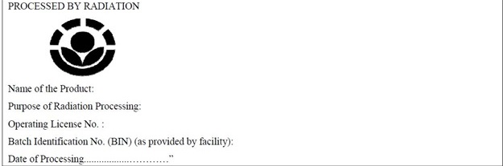

Products and Additives
Regulations on irradiation of foods: An overview
April 22,2017

Irradiation, also known as cold pasteurization, is used for preservation of food items and hence, reduces post-harvest product losses. Food and Agriculture organization (FAO), World Health Organization (WHO), International Atomic Energy Agency (IAEA) and Codex Alimentarius commission has approved irradiation process for use in food products. Regulations are mandatory to keep a check on the safety of irradiated products for consumer use.
CODEX and USFDA has allowed maximum dose of radiation up to 10 kGy irrespective of food items and purpose of irradiations. Approval for irradiation of food is not required up to this limit in any country. On other hand, FSSAI has defined the minimum and maximum dose limit of irradiation based on class of food along with its purpose. Irradiation can be done on many kinds of foods; major category include: tuber & rhizomes (Onion, Potato), fresh fruits and vegetables, cereal, pulses, oil seeds, dried fruits and vegetables, fish products, ethnic foods, processed food, ready-to-eat foods, food additives, nutraceutical products. The main purpose of irradiation is:
- microbial decontamination,
- sterilization,
- insect disinfestation,
- delay ripening,
- shelf life extension,
- inhibit sprouting
However, standards for irradiated processed foods shall comply as per normal product standards available in FSS regulations. FBO should apply for license for the radiation processing facilities and carry irradiation as per the Atomic Energy (Radiation processing of Food and Allied products) Rules, 2012 and certificate shall be provided by facility with dose and purpose of irradiation. FSSAI strictly restricts re-irradiation of foods without permission, while CODEX has allowed re-irradiation of foods with low moisture content with cumulative dose limit up to 10 kGy, with some restrictions. Consumer can easily differentiate irradiated foods as it is mandatory to sell these items as pre-packaged food with Radura logo in green color on label with following declaration:
Scientific literature and various studies have shown that irradiated foods are safe to consume and have almost same nutritive values, except for deterioration of flavors or odors for few foods like dairy products (milk), although these do not contain any toxic substances.